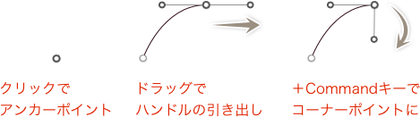
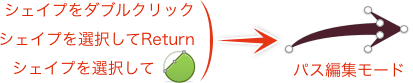
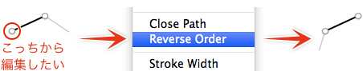
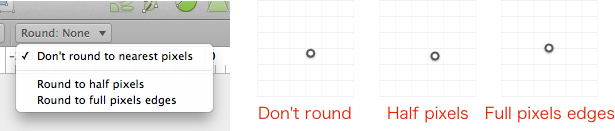
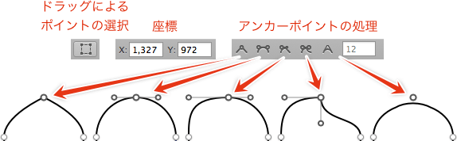
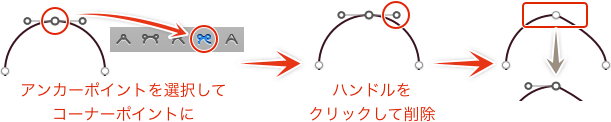

Sketch.app Advent Calender 2013 16日目の記事です。
Sketch.appのパスの描画について、基本的な使い方と設定についてお届けします。
Sketchの基本。というSketch（Sketch 3）の基本操作にフォーカスした電子書籍をリリースしました。詳しくはこちらの「Sketchの基本。」のページをご覧ください。
この記事はSketch 2を元にした記事です。最新版の動作とは異なる可能性が高いため、参考程度にご覧ください。
Skecth.appはベクターベースのツールですので、当然ながらベジェ曲線が扱えます。ベクター描画時の操作はIllustratorと同じ感覚なので、慣れてる方なら少し使うだけでなれると思います。
パスの描画
ベクターツールのデフォルトキーバインドはVectorのVです。PathのPと思ってこれを押しちゃうと、フリーフォームのペンツールになるので注意です。
クリックでアンカーポイントが置かれます。アンカーポイントを置く時にドラッグすれば、ハンドルを出すことができます。ハンドルの調整中にCommandキーを押すと、コーナーポイントを作成できます。

パスの描画を終えるには、Enterキーを押します。再度パスを編集する場合は、そのシェイプをダブルクリックする、選択した状態でEnterキーを押す、ツールバーの編集ボタンを押すのいずれかで編集モードになります。

一度オープンパスとして確定した場合は、パス編集モードで閉じることができませんので、［Edit］→［Paths］にある「Close path」を適用します。逆にクローズパスの場合は、このメニューにチェックが入っている状態になりますので、選択すればオープンパスになります。
オープンパスの描画の続きを逆からしたい場合は、［Edit］→［Paths］にある「Reverse Order」を適用すると、逆からになります。

また、ベクターツールにすると、ツールバーの下にアンカーポイントの座標の処理を設定するプルダウンメニューが表示されます。

Don’t round to nearest pixels
座標の丸めは行われません。
Round to half pixels
座標が0.5px単位に丸められます。
Rount to full pixels edges
小数点以下が丸められます。
アンカーポイントとハンドルの編集

パス編集モードで、アンカーポイントとハンドルの編集ができます。編集モードになるとツールバーの下にパス用のツールが表示されます。ちなみに、パス描画時に角にしたハンドルを再度編集しようとすると、ハンドルの位置が初期化されるので注意してください。
四角のマークは、アンカーポイントの選択で、ドラッグによる範囲選択を有効にするかどうかを設定します。編集しているのがオープンパスの場合に有効です。クローズパスの場合は、どちらにしてもドラッグでアンカーポイントを選択できます。
さらにアンカーポイントを選択すると、その右にツールが追加表示されます。
X / Y
アンカーポイントの座標です。任意の数値を入力できます。
アンカーポイントの処理
アンカーポイントの処理を指定します。
コーナーポイント（ハンドルなし）
ハンドルなしのアンカーポイントになります。
スムーズポイント（固定）
左右のハンドルが角度が180°かつ長さは左右対称に固定されて動きます。
スムーズポイント（可変）
ハンドルの角度は固定ですが、左右で長さを変えることができます。
コーナーポイント（ハンドルあり）
左右でハンドルの角度・長さを変えることができます。
角丸処理
右のボックスに角丸の大きさを入力すると角丸になります。
これらの設定は、アンカーポイントごとに適用できますので、四角の角のうち2つを角丸にすることもできますし、すべての角丸の大きさも変更できます。
片方のハンドルを削除する

コーナーポイント（ハンドルあり）を適用した後に、削除したいハンドルをクリックしてdeleteキーで削除できます。コーナーポイント（ハンドルあり）以外は、うまく削除できません。また、ハンドルが選択できているか見た目で分からないのも修正してほしいですね。